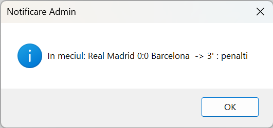

Modul Utilizator
Ca utilizator obișnuit (non-admin), aplicația InstantScoreNews îți oferă acces în modul de vizualizare și notificare. Nu ai permisiuni de modificare.
Diferențe față de administrator
- Nu poți adăuga, modifica sau șterge meciuri și evenimente.
- Butoanele Adăugare, Modificare și Eliminare sunt dezactivate (afișate ca gri).
- Poți vedea lista meciurilor și evenimentelor în timp real, fără să le poți edita.
Notificări live
După autentificare, vei primi ferestre pop-up de notificare care anunță în timp real:
- Startul unui meci
- Marcarea unui gol
- Schimbări sau cartonașe
- Finalul unui meci
Aceste notificări apar automat pe ecran, fără ca tu să trebuiască să interacționezi cu aplicația.
Exemplu de notificare

Înapoi la pagina principală
© 2025 InstantScoreNews - Toate drepturile rezervate.